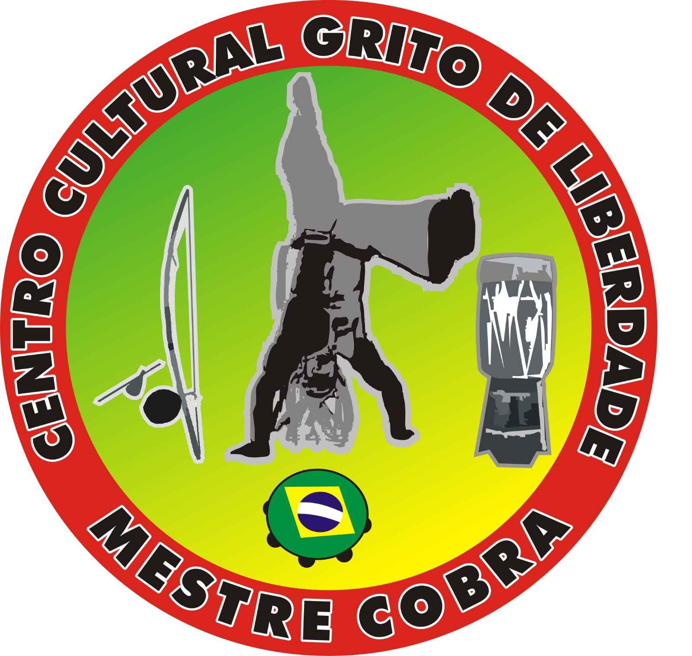

Mestre
cidade


Deus acima de tudo
O Centro Cultural Grito de Liberdade Mestre Cobra é um espaço dedicado à valorização da capoeira, da cultura popular e da formação humana. Aqui, tradição, disciplina, respeito e identidade caminham juntos.
Mais do que um local de treino, este espaço representa união, história e fortalecimento da comunidade. Crianças, jovens e adultos encontram aqui aprendizado, convivência e inspiração para crescer dentro e fora da roda.
Nosso compromisso é preservar as raízes da capoeira, incentivar a cultura afro-brasileira e abrir portas para novas gerações por meio do esporte, da música e da educação cultural.
Texto rascunho: este espaço também pode receber informações sobre eventos, aulas especiais, projetos sociais, oficinas, apresentações culturais e atividades abertas ao público.
Cada aula, treino e apresentação reforça o valor da disciplina, da amizade e do respeito aos mestres e aos alunos. A capoeira é expressão corporal, música, ancestralidade e resistência.
No Grito de Liberdade, buscamos manter viva essa energia por meio de encontros, rodas, eventos culturais e ações que aproximam a comunidade da sua própria história.
Texto rascunho: aqui você pode adicionar no futuro informações sobre calendário de aulas, horários, locais de apresentação e convites para participação da comunidade.
Texto rascunho: espaço para falar sobre a roda, a energia do grupo, os instrumentos, o canto e a presença da comunidade.
Texto rascunho: espaço para explicar apresentações, encontros, festivais, batizados e momentos especiais do projeto.
O trabalho desenvolvido também fortalece a convivência, o espírito de grupo e o sentimento de pertencimento. A capoeira, além do movimento, ensina valores que acompanham cada aluno em sua caminhada.
Texto rascunho: este bloco pode receber depoimentos, história do mestre, história do grupo, objetivos do projeto e descrição das ações realizadas ao longo do ano.
Texto rascunho: também é possível usar este espaço para divulgar campanhas, parcerias, novos projetos e conteúdos institucionais.
Treinos voltados para disciplina, técnica e evolução.
Rodas e encontros culturais com participação da comunidade.
Projetos que valorizam a cultura, a educação e a inclusão.
📍 Brasília, Distrito Federal
A partir de R$ 2.500
📍 Brasília, Distrito Federal
A partir de R$ 8.900